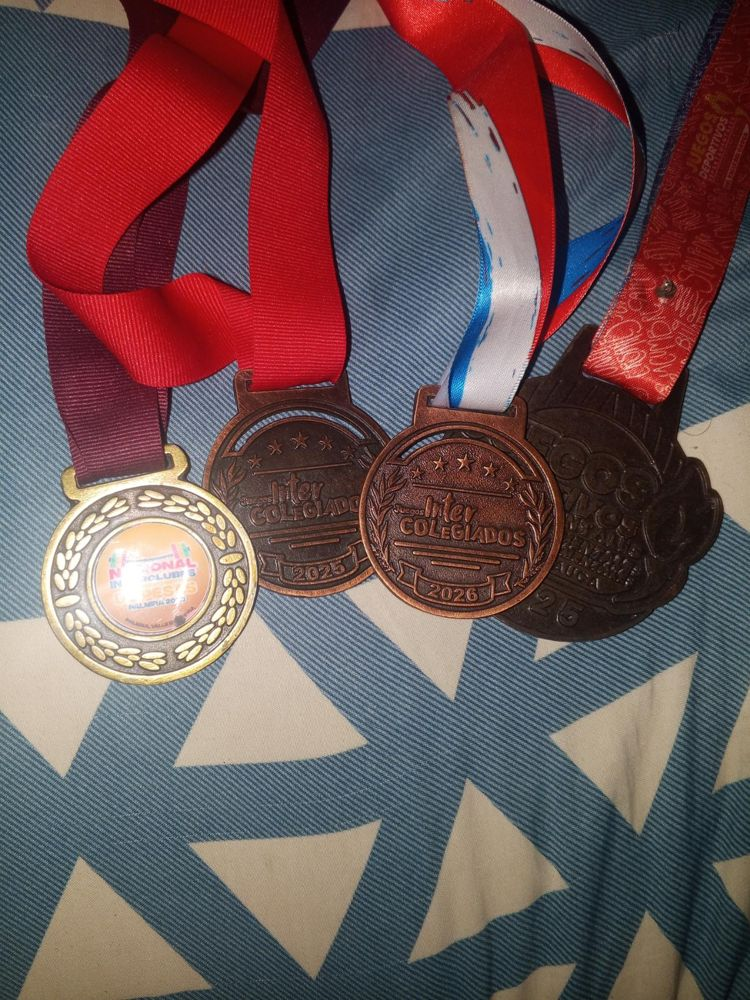
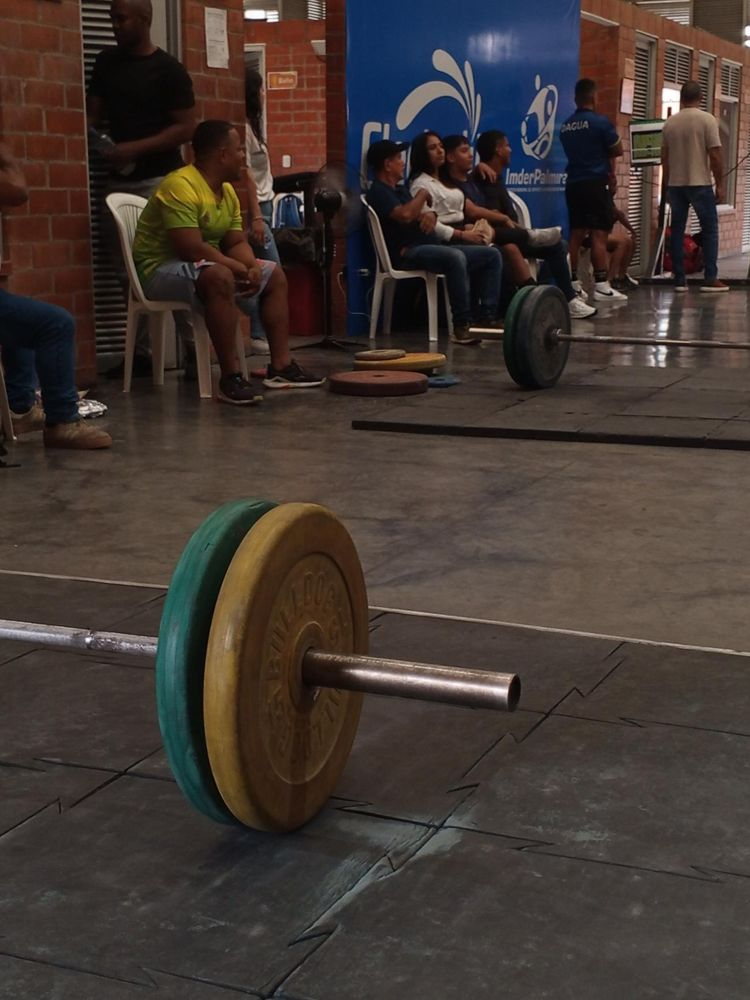

¿Quién soy?
Soy Julián Quintero, una persona en una joven etapa de su vida que aún está aprendiendo a comprender el mundo y a sí mismo, reflexionando sobre un futuro que posiblemente no se dé tal como lo imagino hoy. Soy deportista, con algunas condecoraciones que me llenan de orgullo, y alguien que ha encontrado en la fotografía una forma distinta de mirar la realidad: apreciar paisajes, instantes aparentemente sin importancia y la belleza de lo cotidiano.
El deporte ha cambiado mi vida y mi forma de verla. Aunque la llegada de la universidad y el trabajo formal harán más difícil mantener el mismo ritmo, jamás me alejaré de él. Es parte de quién soy.


Sueños
Sueño con una vida plena: estabilidad económica y mental, un espacio propio rodeado de naturaleza y la libertad de vivir a mi ritmo. Me gustaría conseguir mi primera moto con mi propio esfuerzo; sería un primer gran logro tangible. Más adelante, vivir en un departamento a las afueras de Cali o en Dagua, cerca de todo pero con un amplio espacio personal, rodeado de verde.
Quiero seguir en contacto con mis amigos más cercanos de la etapa escolar y con los nuevos que iré conociendo. Y sobre todo, tener la libertad de salir un fin de semana solo, tomar fotos, buscar una buena composición, comer algo por ahí y sentir que la vida es mía.